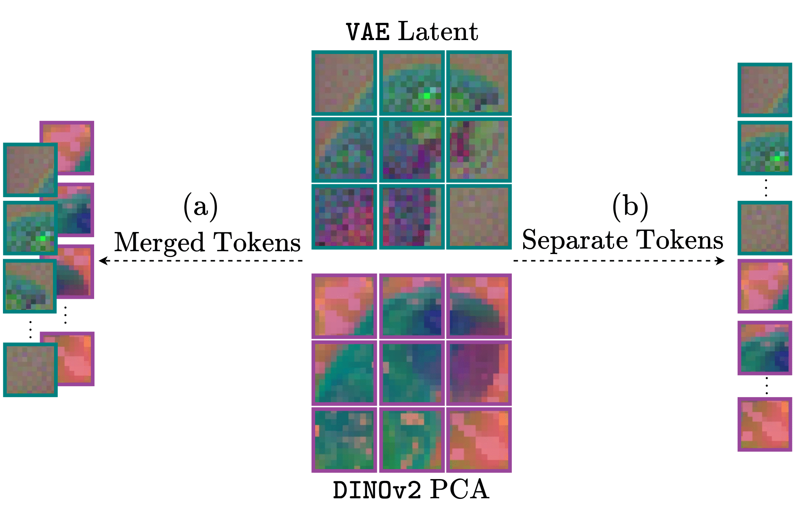
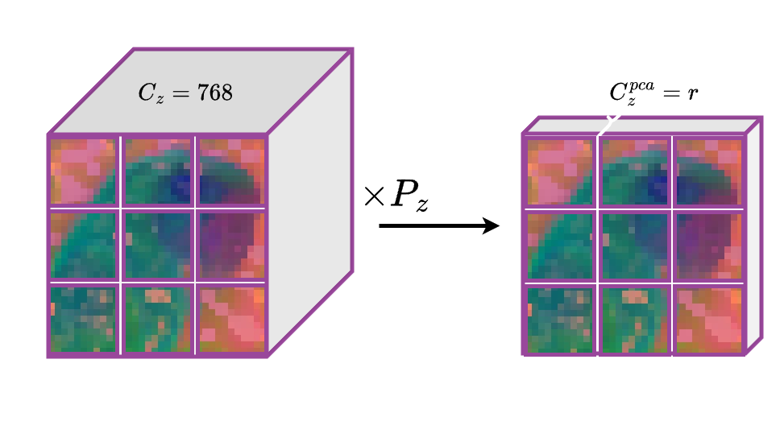
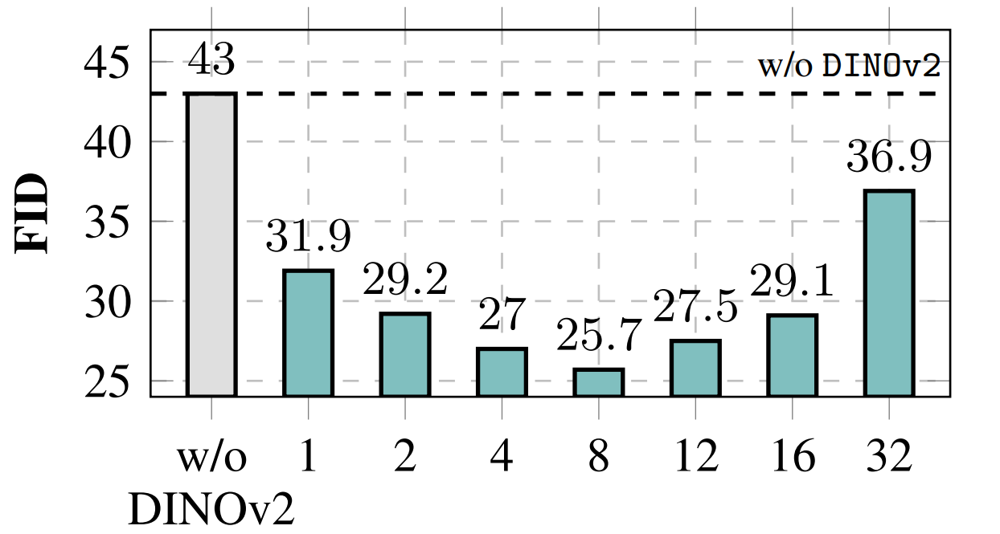
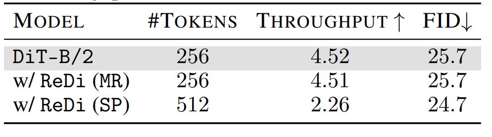

Latent diffusion models (LDMs) dominate high-quality image generation, yet integrating representation learning with generative modeling remains a challenge. We introduce a novel generative image modeling framework that seamlessly bridges this gap by leveraging a diffusion model to jointly model low-level image latents (from a variational autoencoder) and high-level semantic features (from a pretrained self-supervised encoder like DINO). Our latent-semantic diffusion approach learns to generate coherent image–feature pairs from pure noise, significantly enhancing both generative quality and training efficiency, all while requiring only minimal modifications to standard Diffusion Transformer architectures. By eliminating the need for complex distillation objectives, our unified design simplifies training and unlocks a powerful new inference strategy: Representation Guidance, which leverages learned semantics to steer and refine image generation. Evaluated in both conditional and unconditional settings, our method delivers substantial improvements in image quality and training convergence speed, establishing a new direction for representation-aware generative modeling.
Joint Image-Representation Generation: During training, given an image $\mathbf{x}_0$ and its DINOv2 features $\mathbf{z}_0$, we define a joint forward diffusion process:
\[ \begin{aligned} \textcolor{teal}{\mathbf{x}_t} = \sqrt{\bar{\alpha}_t}\textcolor{teal}{\mathbf{x}_0} + \sqrt{1-\bar{\alpha}_t} \textcolor{teal}{\boldsymbol{\epsilon}_x}, \quad \textcolor{purple}{\mathbf{z}_t} = \sqrt{\bar{\alpha}_t}\textcolor{purple}{\mathbf{z}_0} + \sqrt{1-\bar{\alpha}_t} \textcolor{purple}{\boldsymbol{\epsilon}_z}, \end{aligned} \] The diffusion model $\boldsymbol{\epsilon}_\theta(\mathbf{x}_t, \mathbf{z}_t, t)$ takes as input $\mathbf{x}_t$ and $\mathbf{z}_t$, along with timestep $t$, and jointly predicts the noise for both inputs. Specifically, it produces two separate predictions: $\textcolor{black}{\boldsymbol{\epsilon}^x_\theta}(\mathbf{x}_t, \mathbf{z}_t, t)$ for the image latent noise $\boldsymbol{\epsilon}_x$, and $\textcolor{black}{\boldsymbol{\epsilon}^z_\theta}(\mathbf{x}_t, \mathbf{z}_t, t)$ for the visual representation noise $\boldsymbol{\epsilon}_z$. The training objective combines both predictions: \[ \mathcal{L}_{joint} = \underset{\textcolor{teal}{\mathbf{x}_0}, \textcolor{purple}{\mathbf{z}_0}, t} { \mathbb{E}} \Big [ \Vert \textcolor{black}{\boldsymbol{\epsilon}^x_\theta}(\textcolor{teal}{\mathbf{x}_t}, \textcolor{purple}{\mathbf{z}_t}, t) - \textcolor{teal}{\boldsymbol{\epsilon}_x} \Vert_2^2 + \lambda_z \Vert \textcolor{black}{\boldsymbol{\epsilon}^z_\theta}(\textcolor{teal}{\mathbf{x}_t},\textcolor{purple}{\mathbf{z}_t}, t) - \textcolor{purple}{\boldsymbol{\epsilon}_z} \Vert_2^2 \Big], \]


Dimensionality-Reduced DINOv2Representation Guidance: Joint modeling allows us to treat the generated noisy representation as a condition. During inference we modify the posterior distribution to: $\hat{p}_\theta(\mathbf{x}_t, \mathbf{z}_t) \propto p_\theta(\mathbf{x}_t) p( \mathbf{z}_t \vert \mathbf{x}_t)^{w_r}$ \begin{align} \nabla_{\!\mathbf{x}_t} \text{log} \; \hat{p}_\theta(\mathbf{x}_t, \mathbf{z}_t)=& \nabla_{\!\mathbf{x}_t} \text{log} \;p_\theta(\mathbf{x}_t)+ w_r\big( \nabla_{\!\mathbf{x}_t} \text{log} \;p_\theta(\mathbf{z}_t \vert \mathbf{x}_t) \big) \\ =& \nabla_{\!\mathbf{x}_t} \text{log} \;p_\theta(\mathbf{x}_t)+ w_r\big( \nabla_{\!\mathbf{x}_t} \text{log} \;p_\theta(\mathbf{x}_t, \mathbf{z}_t)- \nabla_{\!\mathbf{x}_t} \text{log} \;p_\theta(\mathbf{x}_t) \big). \end{align} We implement this representation-guided prediction $\boldsymbol{\hat{e}_\theta}(\mathbf{x}_t, \mathbf{z}_t, t)$ at each denoising step as follows: \begin{equation} \boldsymbol{\hat{\epsilon}}_\theta(\mathbf{x}_t, \mathbf{z}_t, t) = \boldsymbol{\epsilon}_\theta(\mathbf{x}_t, t) + w_r\left(\boldsymbol{\epsilon}_\theta(\mathbf{x}_t, \mathbf{z}_t, t) - \boldsymbol{\epsilon}_\theta(\mathbf{x}_t, t)\right). \end{equation} Both the image-feature model the image-only model are trained together. With probability $p_{drop}$, we zero out $\mathbf{z}_t$ (setting $\boldsymbol{\epsilon}_\theta(\mathbf{x}_t, t) = \boldsymbol{\epsilon}_\theta(\mathbf{x}_t, \mathbf{0}, t)$) and disable the visual representation denoising loss
We compare the FID values between vanilla DiT or SiT models and those trained with ReDi. Without CFG, ReDi achieves FID=7.5 at 400K iterations, outperforming the vanilla model's performance at 7M iterations. Importantly ReDi shows a greater performance boost than REPA, reaching an FID of 5.7 at 700K whereas REPA reaches an FID of 5.9 at 4M iterations. Moreover, using classifier-free guidance, SiT-XL/2 with ReDi outperforms recent diffusion models with fewer epochs as well as REPA with SiT-XL/2.

Dimensionality reduction ablation. We observe that Increasing the component count improves performance, up to $r=8$, beyond which further components begin to degrade the quality of generation. This suggests an optimal intermediate subspace where compressed visual features retain sufficient expressivity to guide generation without dominating model capacity.
 Merged Tokens vs. Separate Tokens. While both approaches achieve comparable performance gains, SP demonstrates slightly better results. This advantage comes at a significant computational cost: SP doubles the transformer's input sequence length by introducing $256$ additional DINOv2 tokens, resulting in approximately $2\times$ greater compute demands during both training and inference. The MR strategy, by contrast, maintains the original sequence length while delivering similar performance improvements, thereby preserving computational efficiency as measured by throughput.
article{kouzelis2025boosting,
title={Boosting Generative Image Modeling via Joint Image-Feature Synthesis},
author={Kouzelis, Theodoros and Karypidis, Efstathios and Kakogeorgiou, Ioannis and Gidaris, Spyros and Komodakis, Nikos},
journal={arXiv preprint arXiv:2504.16064},
year={2025}
}